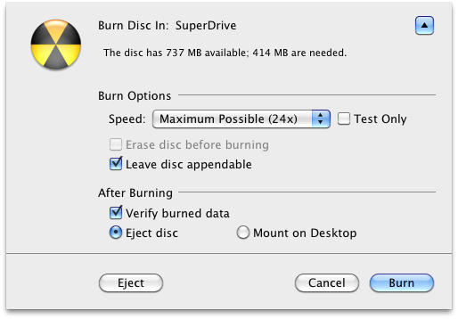
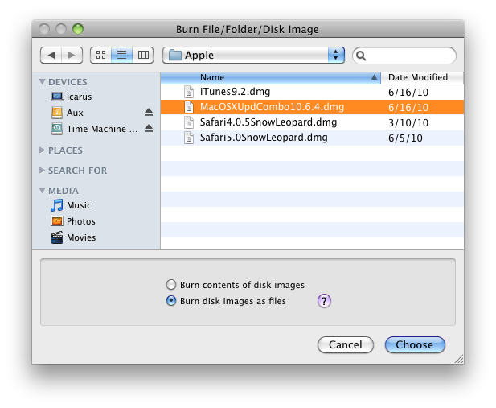

This command lets you burn files and folders to CD, DVD, or Blu-ray. This requires an internal or external drive that supports Mac OS X disc burning. You can continue to use DropDMG to create other disk images or archives while a disc is burning, and if you have multiple optical drives you can even burn more than one disc at a time.

When you choose to burn a disk image file (rather than a regular file or a folder), you have two options:
This makes the contents of the burned disc look like the contents of the disk image. The volume name of the mounted disk image becomes the name of the disc. If the disk image is a device image that contains multiple partitions, then the burned disc will have multiple partitions. This is useful when:
This burns a disc whose content is the single disk image file. The name of the disc is the file’s name, without the extension. This is useful when:

Keyboard Shortcuts
As a shortcut to choosing Burn… from the File menu, you can hold down the Shift key while dragging and dropping a folder onto the DropDMG window or DropDMG’s Dock icon. If you want to burn an disk images as files, hold down the Shift and Option keys.
Command-line
You can also initiate burns from Terminal:
dropdmg --burn-image ~/Desktop/Image.dmg dropdmg --burn-file ~/Desktop/Folder
Appending to CDs
When burning a CD, check the Leave disc appendable box after inserting the blank disc. DropDMG will leave the disc “open” after burning so that you can burn additional files to the same disc under a new session, space permitting.
Custom Disc Icons
To burn a disc with a custom volume icon, see Burning a CD or DVD-ROM With a Custom Icon.